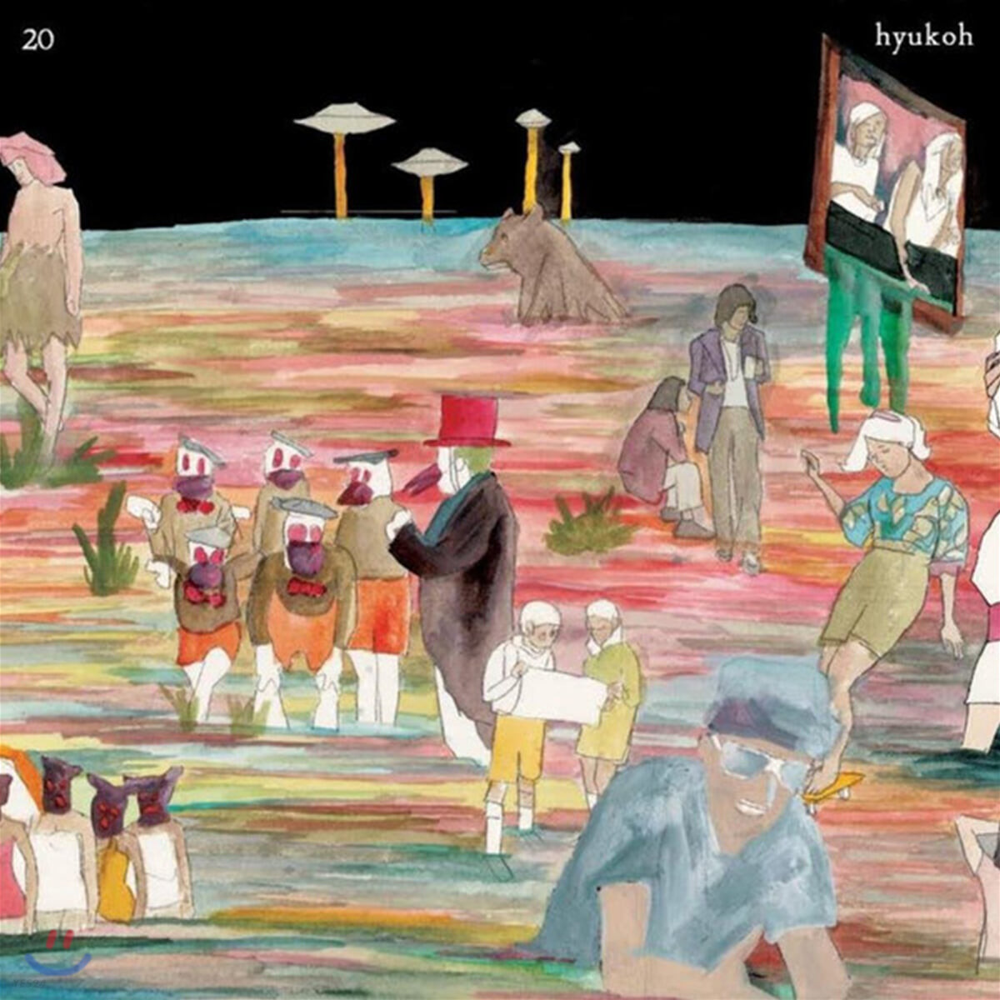

2014.09.18

- Lonely
- Feels Like Roller - Coaster Ride
- Ohio
- 위잉위잉
- Our Place
- I Have No Hometown
가사
비틀비틀 걸어가는 나의 다리
오늘도 의미 없는 또 하루가 흘러가죠
사랑도 끼리끼리 하는 거라 믿는 나는
좀처럼 두근두근거릴 일이 전혀 없죠
위잉위잉 하루살이도
처량한 나를 비웃듯이 멀리 날아가죠
비잉비잉 돌아가는
세상도 나를 비웃듯이 계속 꿈틀대죠
Tell me tell me, please don't tell
차라리 듣지 못한 편이 내겐 좋을 거야
Tell me tell me, please don't tell
차라리 보지 못한 편이 내겐 좋을 거야
aiaiaiaiaiaiaiai aiaiaiaiaiaiai aiaiaiaiaiaiai aiaiaiaiaiai
사람들 북적대는 출근길의 지하철엔
좀처럼 카드 찍고 타볼 일이 전혀 없죠
집에서 뒹굴뒹굴 할일 없어 빈둥대는
내 모습 너무 초라해서 정말 죄송하죠
위잉위잉 하루살이도
처량한 나를 비웃듯이 멀리 날아가죠
비잉비잉 돌아가는
세상도 나를 비웃듯이 계속 꿈틀대죠
쌔앵쌔앵 칼바람도
상처난 내 마음을 어쩌지는 못할 거야
뚜욱 뚜욱 떨어지는
눈물이 언젠가는 이 세상을 덮을 거야
Tell me tell me, please don't tell
차라리 듣지 못한 편이 네겐 좋을 거야
Tell me Tell me, Please don’t tell
차라리 보지 못한 편이 네겐 좋을 거야
Tell me Tell me, Please don’t tell
차라리 느껴보지 못한 편이 좋을 거야
Tell me Tell me, Please don’t tell
차라리 살아보지 못한 편이 좋을 거야
비틀비틀 걸어가는 나의 다리
오늘도 의미 없는 또 하루가 흘러가죠
사랑도 끼리끼리 하는 거라 믿는 나는
좀처럼 두근두근거릴 일이 전혀 없죠
위잉위잉 하루살이도
처량한 나를 비웃듯이 멀리 날아가죠
비잉비잉 돌아가는
세상도 나를 비웃듯이 계속 꿈틀대죠